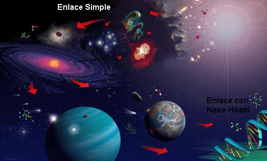
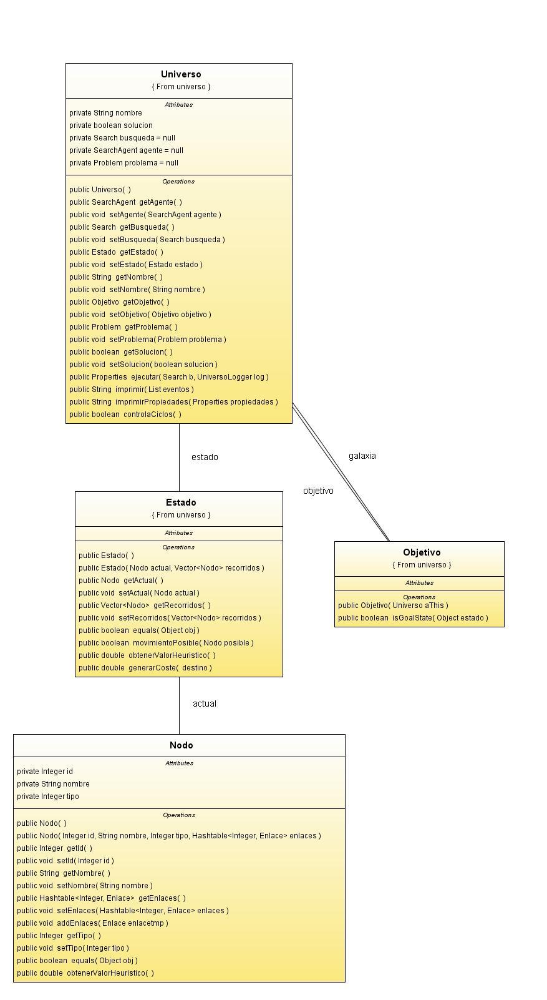

| El micromundo del sistema planetario |
|
Se dispone de un universo que contiene un gran número de planetas, diferentes naves hostiles y una nave que debe trasladarse desde un planeta origen o inicial a un planeta destino, pudiendo existir varios planetas destinos. El objetivo del juego consiste en descubrir el mejor camino, según la búsqueda que se implemente, para que la nave realice el viaje.  Las naves hostiles están representadas por diferentes juegos (descritos en la arquitectura) y suponen una lucha entre dicha nave y la nave principal, el resultado de esta lucha es igual al resultado del juego que se ejecute en dicho enlace (o conexión) por lo que están preestablecidos según el programador de cada juego. Tenemos pleno conocimiento de todos los enlaces entre planetas en todo momento y sus requisitos para recorrerlos, por lo que resulta seguro que el camino que surja mediante el algoritmo que elija el usuario será el mejor con respecto a las características de dicho algoritmo. A continuacion se va a descripbir la representacion que se ha utilizado para modelar el universo. Un universo esta representado por una HashTable de Nodos, donde la clave es el id del nodo, y el valor es el propio nodo. La informacion contenida en el nodo es la siguiente:
Los enlaces tienen la siguiente estructura:
Con esta configuracion conseguimos tener toda la informacion necesaria para la representacion del estado.  En cuanto a los algoritmos de busqueda utilizados para resolver el problema global son:
Estas son las opciones que se dan al usuario para encontrar una solucion al problema global, la comparativa de cada algoritmo se encuentra en otra seccion de la memoria. |